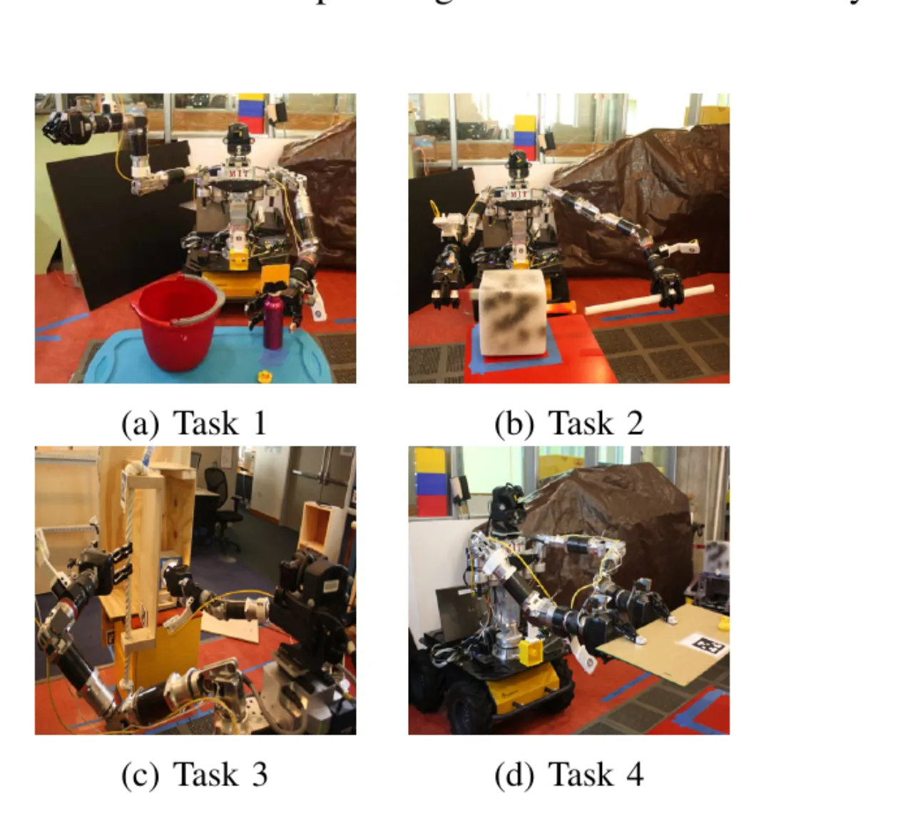
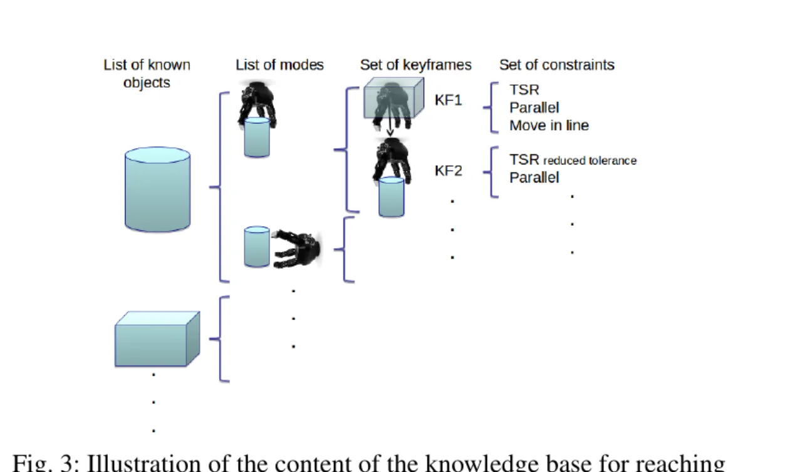
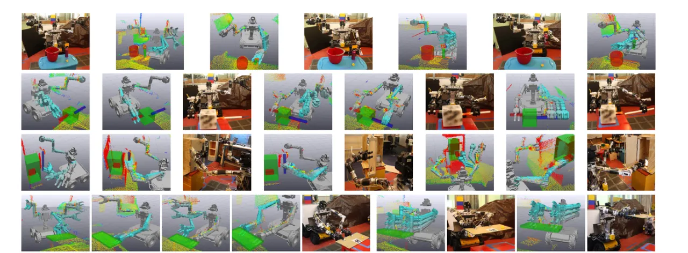
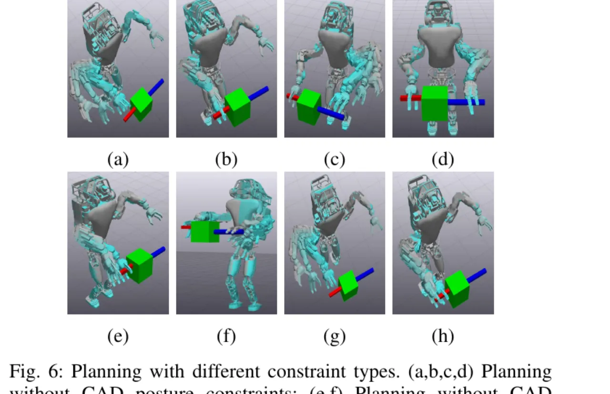

把一个多步操作任务表示为关键帧序列（keyframes）＋每个关键帧上的一组几何约束（geometric constraints）。系统先从多次示范中构建一个"抓取/够取"的知识库（knowledge base, KB），再据此仅凭一次示范学会完整多步任务，并把约束灌入优化式运动规划器求解，最终嵌入共享自主（shared autonomy）流程执行。
从示范中学习（learning from demonstration）让非专家也能教机器人做操作任务，但主流做法通常是从示范里建生成模型（如 GMM）再用回归（如 GMR）复现动作——这类方法难以表示、更无法保证满足任务中的硬几何约束。另一边，基于采样/优化的运动规划器能推理几何约束，却依赖专家手工精心编写约束。C-LEARN 要填补的正是这道鸿沟。
"However, this approach has limitations to capture hard geometric constraints imposed by the task ... while sampling and optimization-based motion planners exist that reason about geometric constraints, these are typically carefully hand-crafted by an expert."
论文关注的是功能性任务（functional tasks）：需要多个末端执行器、按既定步骤操纵环境中物体的准静态（quasi-static）操作，例如从同轴大圆柱里抽出小圆柱——此时"两轴保持平行/同心"这样的硬约束必须被严格满足。应用场景包括拆弹（EOD）的排险流程与灾难响应（DARPA Robotics Challenge 一类）中对高自由度机器人的远程受控操作。

学习分两阶段：阶段一用多次示范为"够取 + 抓取"各物体的不同模式（mode，如从侧面 vs 从顶部抓圆柱）构建知识库 KB，KB 按 (object, mode) 索引，每个条目存一段关键帧序列及每帧的几何约束；阶段二用单次示范学一个完整多步任务——够取/抓取部分靠距离度量匹配 KB 条目取回关键帧与约束，其余步骤（搬运、定位、释放）则从这次示范里学，并顺带识别哪些约束仍然"活跃"。学好的关键帧+约束序列逐段交给优化式规划器求解运动。

任务被定义为有序关键帧序列，每个关键帧携带一组需被规划器同时满足的几何约束。示范通过 Director（MIT 为 DARPA Robotics Challenge 开发的 3D 共享自主界面）以末端执行器遥操作（teleoperation）提供——好处是不需要能反向驱动（back-drivable）的机器人，任何相关机器人都能用；代价是数据噪声大、非均匀，因此依赖时间对齐（如 DTW）来在时间上找约束的做法在此不可行。IK 由 Drake 计算。
C-LEARN 用一份参数化约束模型的目录，按预设判据（主要看示范数据在笛卡尔/旋转空间的方差）为每个聚类出的关键帧选约束：
KB 条目通过对多次示范的关键帧做 k-means 聚类得到（聚类数取每次示范关键帧数的四舍五入均值）；对多末端执行器任务，则在拼接了所有末端执行器特征的高维空间里聚类，从而支持 Task 4 那样的双臂同步约束。作者也坦言此法可能产出"过约束或欠约束"的表示。
运动规划被写成 Drake 里的轨迹优化问题（用 SNOPT 的 SQP 求解）：代价项让关节角尽量贴近名义构型 qnom（可选加速度/速度平滑项），约束项 fi(q1,…,qk) ≤ bi 里塞入关节限位、质心/准静态约束（腿式机器人）以及各关键帧学到的几何约束。执行时按共享自主逐段预览：系统对每对相邻关键帧给出运动计划，操作员可直接批准执行，也可用遥操作做微调。
在四个含几何约束的功能性任务上评估：物体用 April Tags + 板载相机（Multisense SL）跟踪并渲染为界面里的虚拟物体；KB 用每物体每模式 7 次够取/抓取示范学得（约束目录含 TSR + CAD 姿态 + CAD 轨迹），每个多步任务只用一次示范学。每个任务在 10 次不同初始位置的试验中统计成功次数。

| Task ID | Autonomous 自主执行 | Shared Autonomy 共享自主（干预次数） |
|---|---|---|
| 1 | 9 | 10 (1) |
| 2 | 8 | 10 (3) |
| 3 | 8 | 10 (2) |
| 4 | 10 | 10 (0) |
自主执行四任务平均成功率 87.5%，共享自主模式整体 100%。作者强调：C-LEARN 在每次试验都为规划器产出了正确的查询（关键帧信息）——执行失败并非来自学习/规划，而是 Optimus 位控精度在工作空间不同区域波动所致，靠共享自主下的少量遥操作微调即可补偿。
把 Optimus 学到的任务表示（关键帧序列 + 约束集）直接喂给 Eq.1 规划器，换上目标机器人的运动学，即可迁移。由于优化式表述天然支持叠加新约束，腿式的 Atlas（28-DoF, Boston Dynamics）只需额外加入"质心须落在支撑多边形内"等平衡约束。结果：Atlas 在运动学仿真中，对 Task 1–4 每个任务的 10 个场景全部成功规划，且计划保证可在真实硬件上稳定执行。

消融在 Atlas 上复用 Optimus 的 KB 与任务进行：
结论：CAD 姿态约束负责"锁朝向"、CAD 轨迹约束负责"直线/同心"运动，二者对完成这类硬约束功能任务不可或缺，单靠 TSR 体积约束不够。
"Functional tasks often involve articulated constraints, such as opening a door, but our method does not explicitly reason about articulation." 开门这类带铰接的约束未被显式建模。
"The motion planner we used in this implementation does not handle collision avoidance." 作者把探索其它优化式/采样式规划器列为下一步。
"Finally, we will conduct a user study to further evaluate the performance of C-LEARN with end users in shared autonomy mode." 论文的评估以任务成功率为主，尚未做端到端的人因/可用性评估。
方法明确只考虑准静态（quasi-static）操作，不涉及动态操作；每次试验的物体初始位都被摆在机器人运动学可达的位置，需要移动底盘才能完成的情形被排除在本文范围外。约束选择基于方差阈值，作者亦指出可能产生"过约束或欠约束"的表示。